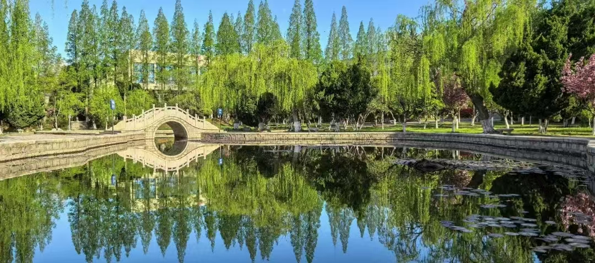
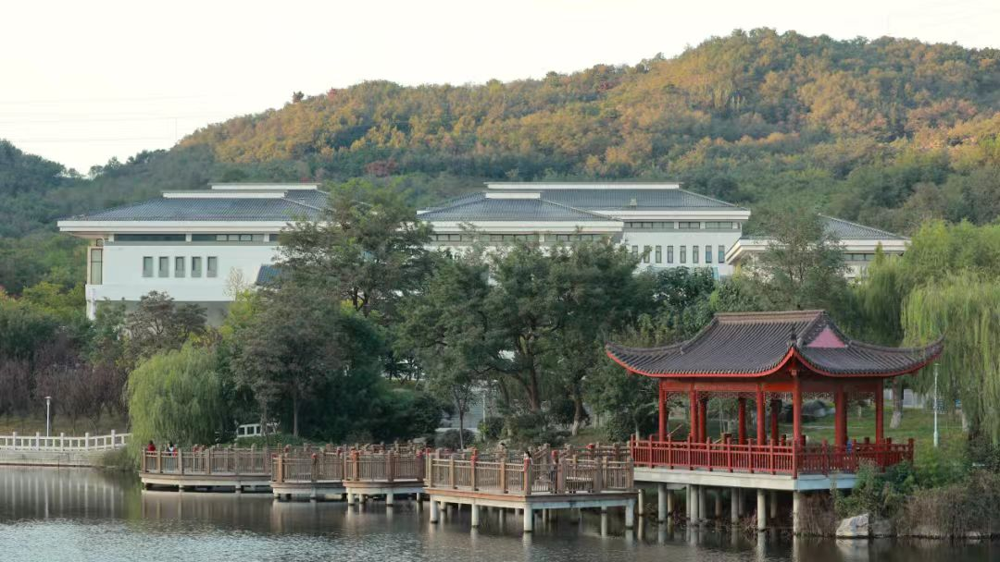
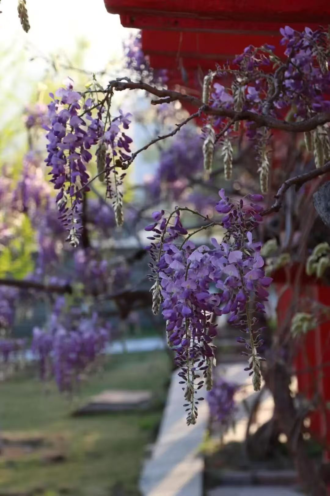
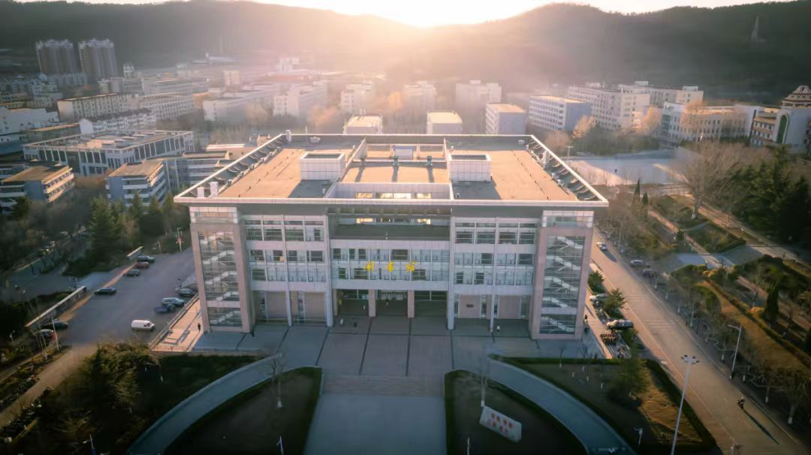
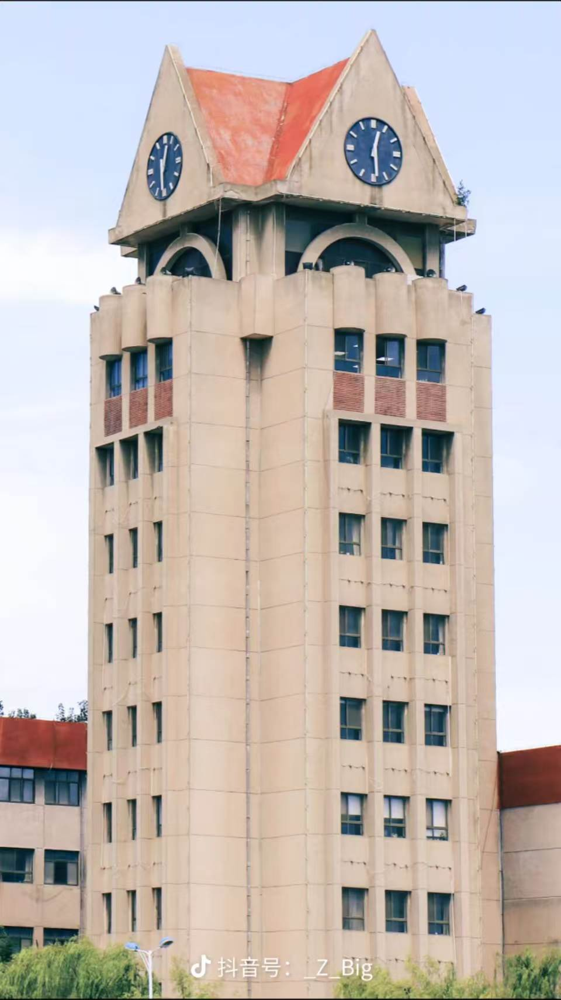

春日的鲁东大学，处处藏着温柔与生机。静心湖畔，柳条轻垂，水面泛着细碎的波光，偶有微风掠过，便漾开一圈圈涟漪。岸边石径蜿蜒，草木新生，鲜嫩的绿芽缀满枝头，与清澈的湖水相映成趣，没有刻意的喧嚣，只有自然的静谧。
紫藤萝是春日里最动人的景致，藤蔓顺着廊架攀援生长，一串串淡紫色的花穗垂落下来，如云似雾，层层叠叠。风一吹，花香淡淡飘散，花瓣轻轻飘落，铺在廊下的地面上，形成一片浅浅的紫。草木新绿，繁花点点，道路干净整洁，教学楼错落有致，往来的学子步履匆匆，带着青春的朝气，让春日的校园既有自然之美，又充满真实的烟火气与活力。除了镜心湖与樱花道，鲁东大学的后山更是春日踏青的绝佳去处。沿着蜿蜒的山路往上，漫山的野花竞相开放，粉的、黄的、紫的，点缀在翠绿的草丛间，像是大自然打翻了调色盘。站在山顶俯瞰，整个校园尽收眼底：错落有致的教学楼、绿意盎然的操场、波光粼粼的镜湖，还有远处的城市风光，构成了一幅绝美的春日画卷。山风拂面，带着草木的清香与春日的暖意，让人身心舒畅。春日的鲁东大学，是自然与人文的完美融合，每一缕风、每一朵花、每一片叶，都在诉说着校园的美好与青春的活力，让每一个身处其中的人，都能感受到春日的温暖与生命的力量。



鲁东大学的人文景观，是校园里最动人的文化印记。图书馆作为校园的核心地标，外观庄重典雅，内部藏书丰富，是学子们汲取知识的殿堂，春日的阳光透过落地窗洒在书架上，光影斑驳，书香四溢。这是国内高校中唯一一座专业文学博物馆,承载了这所大学90余年的风雨峥嵘和厚重品格。钟楼也见证了一代代学子的成长。这些人文景观,不仅是校园的物理地标，更是鲁东大学精神与文化的象征，承载着一代代鲁东学子的青春记忆与理想追求。

